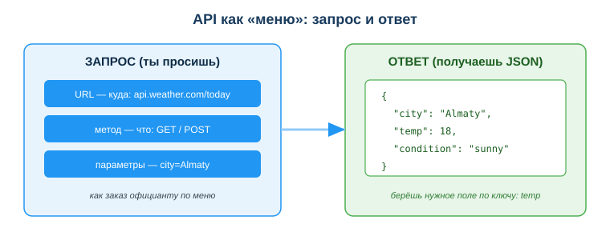
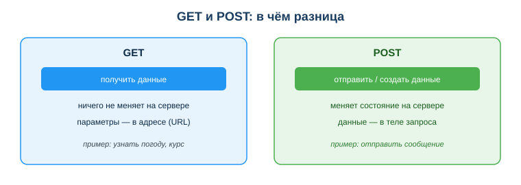

Каждое утро ты заходишь на сайт, смотришь курс валют и вручную переписываешь число в таблицу. Десять секунд — но каждый день, и легко забыть или ошибиться. А приложение погоды на телефоне само берёт свежие данные с сервера, бот в мессенджере сам отправляет сообщения, сайт магазина сам проверяет оплату в банке.
Всё это работает через API — способ одной программы попросить что-то у другой. Понимание API превращает тебя из пользователя готовых программ в того, кто связывает их вместе и автоматизирует рутину.

Современные программы почти никогда не работают в одиночку — они постоянно обмениваются данными. Тот, кто умеет читать и составлять запросы к API, может соединить любые сервисы и поручить машине то, что раньше делал руками.
Связь с профессией: разработчик ПО почти в каждом проекте обращается к чужим API (оплата, карты, уведомления, ИИ-сервисы) и сам проектирует API своего приложения. Это базовый навык — без него современную разработку не представить.
Посмотри на схему «API как меню» выше. Ответь на вопросы:
Аналогия: в кафе ты не идёшь на кухню — ты делаешь заказ официанту по меню. Меню — это и есть API: список того, что можно запросить. Ты не знаешь, как сервис устроен внутри, но знаешь, что попросить и что получишь.
Обращение к API по сети (REST API) обычно содержит:
https://api.weather.com/today?city=Almaty;GET (получить данные), POST (отправить/создать);JSON — текстовый формат данных в виде пар «ключ: значение»:
{
"city": "Almaty",
"temp": 18,
"condition": "sunny"
}Программа берёт из ответа нужное поле по ключу (temp) и использует его — например, записывает в таблицу или показывает на экране.
Два самых частых метода различаются по назначению.

Нужно каждое утро получать курс валют. Вручную — заходить на сайт и переписывать число. Через API — программа сама делает GET-запрос к сервису курсов, получает JSON, берёт нужное поле и записывает в таблицу. Один раз настроил — дальше работает само, без тебя.
ИИ-ассистент здесь помогает: можно описать задачу словами и попросить готовый пример запроса к нужному API, а затем проверить и доработать его.
Ответь письменно:
GET https://api.weather.com/today?city=Almaty на части: URL, метод, параметр. Что вернёт такой запрос?{"city": "Almaty", "temp": 18, "condition": "sunny"}. По каким ключам взять температуру и погодное условие? Какие значения получишь?https://api.weather.com/today. Параметр — city=Almaty (уточняет город). В ответ придёт JSON с погодой по Алматы».
Источник: материалы по применению информационно-коммуникационных технологий и автоматизации (DigComp 2.2); официальная документация MDN Web Docs (REST, JSON).
Материал разработан рабочей группой ТОО «Колледж Хекслет Казахстан» и одобрен к использованию в обучении решением Педагогического совета.